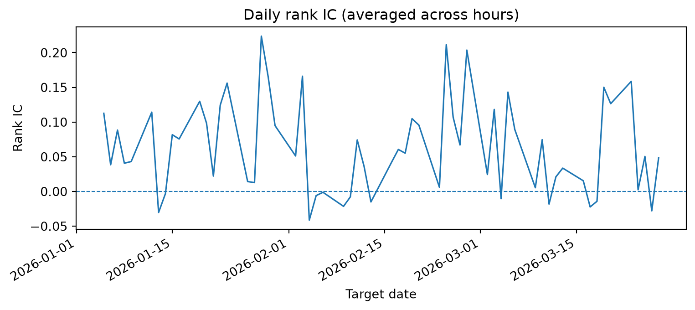
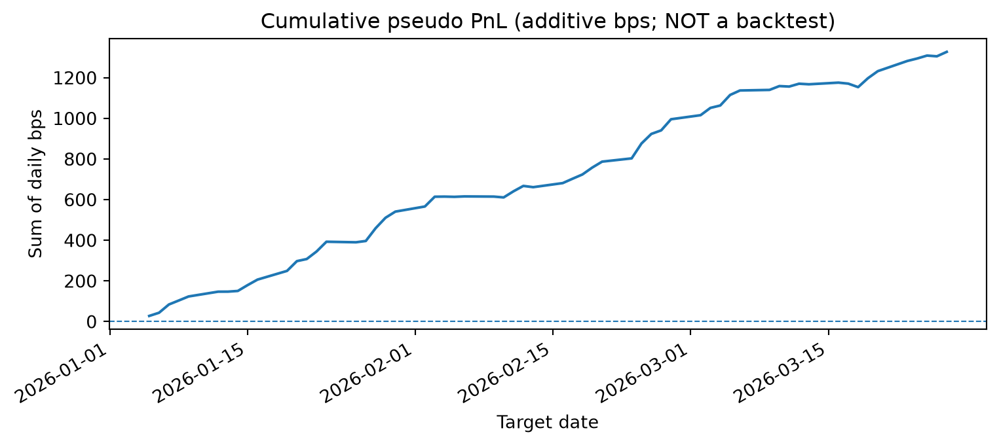

Rows evaluated: 14,400
Trading days: 60 | Tickers: 40 | Hours/day: 6
Target: raw_return | Simulated data: True
forecast_date target_date ticker hour forecast raw_return
2026-01-02 2026-01-05 STK000 1 0.002754 0.001489
2026-01-02 2026-01-05 STK001 1 0.001381 -0.005116
2026-01-02 2026-01-05 STK002 1 -0.001954 -0.000489
2026-01-02 2026-01-05 STK003 1 0.001283 -0.000174
2026-01-02 2026-01-05 STK004 1 -0.000567 -0.008806Forecast Analytics — Individual Forecast Diagnostics
Raw-return target | Simulated hourly forecasts for the next trading day
Overview: - (return, forecast) IC - T-stats, tail statistics - Goal: test individual forecasts without running simulations (pseudo positions/pnl) - Goal: raw return build target
Data with predicted return Data from market Calculate IC , tstat, tail stat Output =? Pseudo positions/ pnl
1. Objective and data contract
This is a forecast diagnostics tool, not a full trading backtest. Each model submits forecasts created on forecast_date for each ticker and hour on the next trading day (target_date). We initially evaluate against raw returns, without a risk-model residualization step.
Inputs are two tables:
forecasts.csv:forecast_date,target_date,ticker,hour,forecastraw_returns.csv:target_date,ticker,hour,raw_return- Or, if raw returns are not yet built:
hourly_bars.csv:target_date,ticker,hour,open,close(the tool derivesclose / open - 1).
forecast is a model score (higher = more bullish); it need not be in return units. raw_return is the realized return for exactly the predicted hourly bar, in decimal units (0.001 = 10 bps). For live data, define this hourly return convention consistently, e.g. hour_close / hour_open - 1.
2. Configuration and data loading
3. Information Coefficient (IC)
We compute cross-sectional IC within each target day × hour, comparing forecasts and realized returns across tickers. Pearson IC tests linear association; Rank IC is Spearman rank correlation. Daily IC averages all hourly IC values for that day.
Metric Mean Daily t-stat
Pearson IC 0.0737 8.6834
Rank IC 0.0627 7.29564. Forecast buckets and tail statistics
For each date/hour, sort stocks by forecast and create five quintiles (1 = lowest forecast, 5 = highest). Check whether realized returns rise across buckets, and inspect the 5th/95th percentile of returns in each bucket.
forecast_bucket count mean_return_bps p05_bps p95_bps positive_rate_pct
1 2880 -2.51 -71.99 65.07 47.92
2 2880 -0.33 -68.69 68.13 48.92
3 2880 0.96 -65.63 67.59 51.11
4 2880 2.46 -65.69 73.38 51.77
5 2880 5.00 -62.77 73.01 54.20
Unconditional raw-return percentiles (bps):
0.01 -93.87
0.05 -66.73
0.50 0.92
0.95 69.90
0.99 98.475. Pseudo positions and pseudo PnL (diagnostic only)
Within each date/hour, demean forecasts and scale so that the sum of absolute weights is 1 (approximately 0.5 gross long / 0.5 gross short). Calculate forecast-weighted realized returns. This is an idealized signal diagnostic, without execution fills, trading costs, financing, order constraints, or turnover simulation.
Daily mean (bps) Daily t-stat Positive days (%) 5% VaR cutoff (bps) 5% CVaR (bps)
22.119 8.635 83.333 -4.125 -9.4376. Diagnostic plots


7. Interpretation and next steps
- IC / Rank IC: Is each model’s forecast associated with future raw returns in the correct direction?
- Daily t-stat: Does the mean daily IC or pseudo PnL differ from zero under a simple independence assumption? Not HAC-adjusted; daily observations can be serially dependent.
- Forecast buckets / tails: Do top-ranked predictions outperform bottom-ranked predictions, and how bad are extreme realized returns?
- Pseudo PnL: A quick, idealized sanity check; not an executable strategy or portfolio simulation.
Limitations: In the demo, pd.bdate_range excludes weekends but does not exclude market holidays. Replace with an exchange calendar for production. Hour 1–6 is a synthetic six-bin convention, not a precise US market session schedule. In production, define every hourly bar timestamp and how its return is computed, and ensure forecasts are generated before the target day’s market data becomes available. Real-data performance must be evaluated out-of-sample.
When the risk model is available, add a new target column (e.g. residualized_return) to the returns table and change TARGET_COL above; the analytics code remains the same.